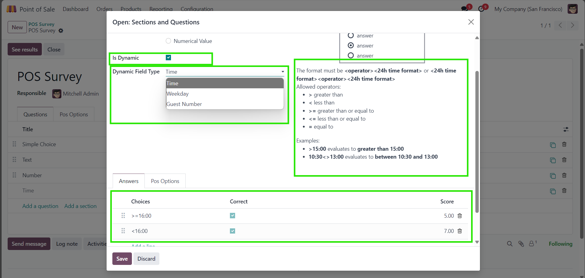
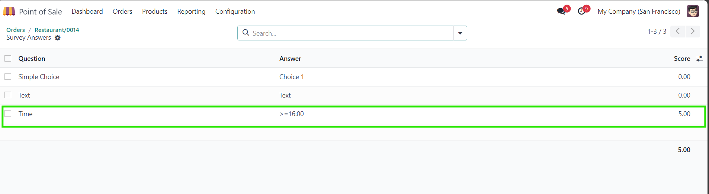

This module enables dynamic survey questions with answers based on system parameters.
Enable Is Dynamic in the questions setup dialog to get started
Select the Dynamic Field Type to apply
Following the instructions on the right, create options and their scores

Now if any of the options evaluate to True when validating in POS, an answer will be submitted for the question
